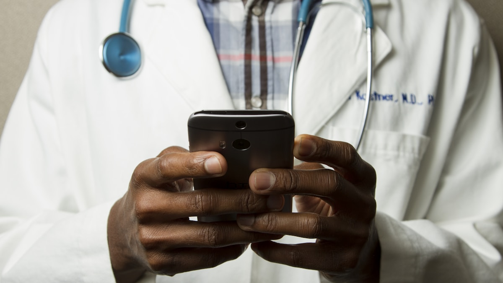

During the height of the COVID-19 pandemic, telehealth usage surged — at one point accounting for up to 50% of patient visits in certain settings. That figure has since stabilized, but telehealth continues to represent approximately 17% of all patient visits as of 2023, a significant and permanent increase from less than 1% in 2019. For family physicians and their patients, this shift is not a temporary fix. It is a structural change in how care is delivered.

Why telehealth stuck
The convenience and accessibility of virtual visits drove continued adoption even after in-person care resumed. Three groups benefited most:
- Rural patients: People who previously drove hours for a 15-minute follow-up can now connect from home.
- Patients with mobility limitations: Chronic pain, disability, and recovery from surgery all make virtual visits a practical option.
- Patients needing frequent check-ins: Chronic disease management — diabetes, hypertension, heart failure — often requires more frequent contact than in-person scheduling allows.
For primary care clinicians, telehealth also streamlines workflows. Quick medication checks, lab result reviews, and mental health follow-ups can often be handled more efficiently virtually than in person.
What the policy changes mean
The extension of telehealth flexibilities has been a focal point at both the federal and state level. Key changes include:
Medicare coverage is now permanent
Medicare patients can receive telehealth services for non-behavioral and mental health care in their homes without geographic restrictions. This was a pandemic-era flexibility that is now permanent for many services.
Community health centers have permanent authority
Federally Qualified Health Centers (FQHCs) and Rural Health Clinics (RHCs) are now permanently authorized to serve as distant-site providers for behavioral and mental health telehealth services. This is critical for underserved communities that rely on these clinics as their primary source of care.
Interstate licensing compacts are expanding
Many states have introduced interstate licensing compacts that allow providers to see patients across state lines. This is especially important for patients near state borders, those who relocate seasonally, and patients who want to keep their established provider after moving.
Permanent telehealth coverage for many services — no geographic restrictions for home-based care.
FQHCs and RHCs can now permanently provide behavioral telehealth to underserved communities.
Interstate compacts let providers see patients across state lines, improving continuity of care.
What works well — and what does not
Telehealth is not right for everything. As a family physician, here is how I think about when a virtual visit makes sense and when an in-person visit is better:
Good for telehealth
- Medication management and refills
- Lab result reviews and follow-up discussions
- Mental health check-ins and therapy sessions
- Chronic disease monitoring (blood pressure, blood glucose, weight)
- Post-surgical follow-ups and wound checks (photo-based)
- Upper respiratory infections and minor acute complaints
Better in person
- New symptoms that require a physical exam
- Abdominal pain, chest pain, or shortness of breath
- Procedures (joint injections, skin biopsies, IUD placement)
- First visits with a new patient when a full history and exam are needed
- Any situation where the patient or clinician feels something is being missed
How to make the most of a telehealth visit
Patients who prepare for virtual visits get more out of them. A few practical tips:
- Test your technology: Check your camera, microphone, and internet connection 10 minutes before the appointment.
- Have your data ready: Blood pressure readings, blood glucose logs, weight, and a list of current medications.
- Write down your questions: It is easy to forget what you wanted to ask. A short list keeps the visit focused.
- Find a quiet, well-lit space: Your clinician needs to see you clearly, and you need to hear them without distractions.